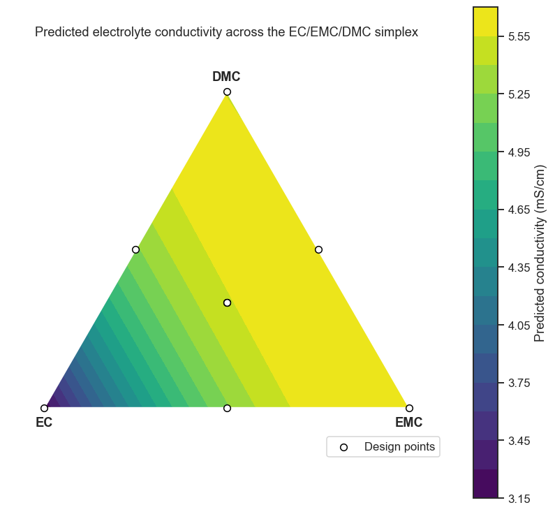

25. Live Tutorial 4: Optimization and Mixture Designs#
A reduced model isn’t the end of a DoE study — it’s a map. This session picks up right where Notebook 24 left off (a trustworthy first-order model of the adhesive-bonding process) and asks: which direction do you move in next? Then it turns to a design type every previous DoE notebook has sidestepped: mixture designs, for the very common materials-science situation where your “factors” are ingredient proportions that must sum to 100% — a constraint standard factorial designs simply cannot represent.
Session plan
A short bridge: from a reduced model to an optimum
Mixture designs — the constraint standard DoE ignores
Simplex-lattice and simplex-centroid designs, built by hand
Fitting a Scheffé mixture model
Reading a ternary contour plot
import numpy as np
import pandas as pd
import matplotlib.pyplot as plt
import seaborn as sns
from itertools import product, combinations
import statsmodels.formula.api as smf
sns.set_theme(style='ticks', palette='colorblind')
plt.rcParams.update({'figure.dpi': 110, 'font.size': 11})
rng = np.random.default_rng(303)
25.1 A Short Bridge: From a Reduced Model to an Optimum#
Notebooks 19–20 already cover steepest ascent and desirability optimization in depth — this is a short bridge, not a repeat. Once model reduction gives you a trustworthy first-order model, steepest ascent moves you toward better settings using nothing more than that model’s coefficients as a direction vector, most useful before you’re anywhere near the optimum (where a first-order model is still a fair local approximation).
Every notebook in this course runs independently, so the cell below briefly regenerates Notebook 24 (Live Tutorial 3) §24.2’s adhesive-bonding reduced model from scratch (same seed, same design, same true model) — see that notebook for the full backward-elimination walkthrough.
# ── Quick setup: regenerate Notebook 24 (Live Tutorial 3) §24.2's reduced model ──
import pyDOE3
design_gen = pyDOE3.fracfact('a b c d abcd') # 2^(5-1), Resolution V, I=ABCDE
df_adh = pd.DataFrame(design_gen, columns=['A', 'B', 'C', 'D', 'E'])
def true_adhesive_strength(df):
return (18
+ 4*df.A + 6*df.B + 3*df.C - 2*df.D - 1*df.E
+ 2*df.A*df.B - 1.5*df.C*df.D + 0*df.B*df.C + 0*df.A*df.E)
df_adh['strength_MPa'] = (true_adhesive_strength(df_adh) + rng.normal(0, 1.0, len(df_adh))).round(2)
def backward_elimination(data, response, candidate_terms, alpha=0.05, verbose=False):
terms = list(candidate_terms)
while True:
formula = f'{response} ~ ' + ' + '.join(terms)
fit = smf.ols(formula, data=data).fit()
pvalues = fit.pvalues.drop('Intercept')
worst_term, worst_p = pvalues.idxmax(), pvalues.max()
if worst_p <= alpha or len(terms) == 1:
return fit, terms
terms.remove(worst_term)
candidates = ['A', 'B', 'C', 'D', 'E', 'A:B', 'C:D', 'B:C', 'A:E']
model_reduced, kept_terms = backward_elimination(df_adh, 'strength_MPa', candidates)
print('Reduced model terms:', kept_terms)
Reduced model terms: ['A', 'B', 'C', 'D', 'E', 'A:B', 'C:D']
# Direction of steepest ascent = the reduced model's main-effect coefficients,
# normalised -- literally "move each factor in proportion to how much it helps"
direction = model_reduced.params.reindex(['A', 'B', 'C', 'D', 'E']).fillna(0)
direction_normalized = direction / np.linalg.norm(direction)
print('Steepest-ascent direction (normalised, coded units):')
print(direction_normalized.round(3))
step_size = 0.5 # coded units per step
path = pd.DataFrame([direction_normalized * step_size * i for i in range(6)],
columns=direction_normalized.index)
path.index.name = 'step'
print('\nSuggested next experiments along the steepest-ascent path (coded units):')
print(path.round(2))
print('\nRun a few of these, refit, and repeat -- exactly Notebook 20\'s workflow,')
print('until curvature appears (Notebook 22, Live Tutorial 1, Section 22.4\'s test) and it is')
print('time to switch to a full RSM quadratic model (Notebook 19).')
Steepest-ascent direction (normalised, coded units):
A 0.507
B 0.747
C 0.360
D -0.192
E -0.134
dtype: float64
Suggested next experiments along the steepest-ascent path (coded units):
A B C D E
step
0 0.00 0.00 0.00 -0.00 -0.00
1 0.25 0.37 0.18 -0.10 -0.07
2 0.51 0.75 0.36 -0.19 -0.13
3 0.76 1.12 0.54 -0.29 -0.20
4 1.01 1.49 0.72 -0.38 -0.27
5 1.27 1.87 0.90 -0.48 -0.33
Run a few of these, refit, and repeat -- exactly Notebook 20's workflow,
until curvature appears (Notebook 22, Live Tutorial 1, Section 22.4's test) and it is
time to switch to a full RSM quadratic model (Notebook 19).
25.2 Mixture Designs: The Constraint Standard DoE Ignores#
Every design so far — factorial, fractional, RSM — assumed factors can be set independently: cranking up temperature does not force pressure to change. Formulation problems break that assumption completely. Blend three solvents for a battery electrolyte and their volume fractions must sum to 100% — increase one, and at least one other necessarily decreases. Run a standard \(2^3\) factorial on volume fractions and roughly half the design points describe physically impossible mixtures (fractions above 1, or summing to nonsense).
The feasible region for \(q\) components is not a cube — it’s the simplex: for 3 components, a triangle; for 4, a tetrahedron. A mixture design places runs within that constrained region instead of a cube’s corners.
25.3 Simplex-Lattice and Simplex-Centroid Designs, Built by Hand#
A \(\{q,m\}\) simplex-lattice design takes every combination of \(q\) components at \(m{+}1\) evenly spaced levels (\(0, 1/m, 2/m, \ldots, 1\)) whose proportions sum to exactly 1. For \(q=3,\ m=2\): levels \(\{0, 0.5, 1\}\), giving the 3 pure-component vertices plus the 3 binary-blend edge midpoints — 6 points total, and every one of them a physically realisable blend by construction.
def simplex_lattice(q, m):
"""All q-component blends at levels {0, 1/m, ..., 1} that sum to 1."""
levels = [i / m for i in range(m + 1)]
return np.array([combo for combo in product(levels, repeat=q) if np.isclose(sum(combo), 1.0)])
def simplex_centroid(q):
"""The centroid of every non-empty subset of q components (2^q - 1 points)."""
points = []
for r in range(1, q + 1):
for subset in combinations(range(q), r):
point = np.zeros(q)
point[list(subset)] = 1.0 / r
points.append(point)
return np.array(points)
lattice_32 = simplex_lattice(q=3, m=2)
centroid_3 = simplex_centroid(q=3)
print(f'{3,2} simplex-lattice design ({len(lattice_32)} points):')
print(pd.DataFrame(lattice_32, columns=['EC', 'EMC', 'DMC']))
print(f'\nSimplex-centroid design ({len(centroid_3)} points) includes the same vertices/edges')
print('plus the overall centroid (1/3, 1/3, 1/3):')
print(pd.DataFrame(centroid_3, columns=['EC', 'EMC', 'DMC']).round(3))
(3, 2) simplex-lattice design (6 points):
EC EMC DMC
0 0.0 0.0 1.0
1 0.0 0.5 0.5
2 0.0 1.0 0.0
3 0.5 0.0 0.5
4 0.5 0.5 0.0
5 1.0 0.0 0.0
Simplex-centroid design (7 points) includes the same vertices/edges
plus the overall centroid (1/3, 1/3, 1/3):
EC EMC DMC
0 1.000 0.000 0.000
1 0.000 1.000 0.000
2 0.000 0.000 1.000
3 0.500 0.500 0.000
4 0.500 0.000 0.500
5 0.000 0.500 0.500
6 0.333 0.333 0.333
25.4 Fitting a Scheffé Mixture Model#
Electrolyte solvent blend study: three carbonate solvents — EC (ethylene carbonate), EMC (ethyl methyl carbonate), DMC (dimethyl carbonate) — blended in varying proportions, response = ionic conductivity (mS/cm). We combine the lattice and centroid designs above, replicate the centroid 3 times (the mixture-design equivalent of Notebook 22 (Live Tutorial 1) §22.4’s centre-point replication, for a pure-error / lack-of-fit check), and fit a Scheffé quadratic model:
Notice there is no intercept term. Because \(x_1+x_2+x_3=1\) always,
an intercept would be perfectly collinear with the three linear terms —
the regression matrix would be singular. Dropping the intercept
(-1 in the formula) is not a stylistic choice here; it is required for
the model to be fittable at all, and is the single most important
scripting detail that differs from every other regression in this
course.
mixture_points = np.vstack([lattice_32, np.tile([1/3, 1/3, 1/3], (3, 1))]) # + 3 centroid replicates
df_mix = pd.DataFrame(mixture_points, columns=['EC', 'EMC', 'DMC'])
# True Scheffe model: pure-component conductivities + interaction (blending) terms.
# Positive interaction terms model the real, well-documented phenomenon that binary
# carbonate-solvent blends often conduct better than a linear blend of the pure
# components would predict (a genuine synergy, not just illustrative convenience).
b = {'EC': 3.0, 'EMC': 5.5, 'DMC': 6.0, 'EC:EMC': 4.0, 'EC:DMC': 3.0, 'EMC:DMC': -1.0}
true_cond = (b['EC']*df_mix.EC + b['EMC']*df_mix.EMC + b['DMC']*df_mix.DMC
+ b['EC:EMC']*df_mix.EC*df_mix.EMC + b['EC:DMC']*df_mix.EC*df_mix.DMC
+ b['EMC:DMC']*df_mix.EMC*df_mix.DMC)
df_mix['conductivity_mS_cm'] = (true_cond + rng.normal(0, 0.15, len(df_mix))).round(3)
print(df_mix)
EC EMC DMC conductivity_mS_cm
0 0.000000 0.000000 1.000000 5.534
1 0.000000 0.500000 0.500000 5.596
2 0.000000 1.000000 0.000000 5.596
3 0.500000 0.000000 0.500000 5.242
4 0.500000 0.500000 0.000000 5.251
5 1.000000 0.000000 0.000000 3.177
6 0.333333 0.333333 0.333333 5.255
7 0.333333 0.333333 0.333333 5.496
8 0.333333 0.333333 0.333333 5.775
model_mix = smf.ols('conductivity_mS_cm ~ EC + EMC + DMC '
'+ EC:EMC + EC:DMC + EMC:DMC - 1', data=df_mix).fit()
print(model_mix.summary().tables[1])
# Lack-of-fit check using the 3 replicated centroid points,
# same F-test logic as Notebook 22 (Live Tutorial 1) §22.4
centroid_reps = df_mix.iloc[-3:]
pure_error_var = centroid_reps['conductivity_mS_cm'].var(ddof=1)
centroid_pred = model_mix.predict(centroid_reps).iloc[0]
print(f"\nCentroid replicates: {centroid_reps['conductivity_mS_cm'].values}")
print(f'Pure-error std at centroid: {np.sqrt(pure_error_var):.3f} mS/cm')
print(f'Model prediction at centroid: {centroid_pred:.3f} mS/cm')
==============================================================================
coef std err t P>|t| [0.025 0.975]
------------------------------------------------------------------------------
EC 3.1830 0.213 14.922 0.001 2.504 3.862
EMC 5.6020 0.213 26.262 0.000 4.923 6.281
DMC 5.5400 0.213 25.971 0.000 4.861 6.219
EC:EMC 3.3372 0.933 3.578 0.037 0.369 6.305
EC:DMC 3.4252 0.933 3.672 0.035 0.457 6.393
EMC:DMC 0.0032 0.933 0.003 0.997 -2.965 2.971
==============================================================================
Centroid replicates: [5.255 5.496 5.775]
Pure-error std at centroid: 0.260 mS/cm
Model prediction at centroid: 5.527 mS/cm
Take-home message
The three linear (pure-component) coefficients land close to their true values — EC 3.18 (true 3.0), EMC 5.60 (true 5.5) — but DMC comes out at 5.54 against a true value of 6.0, a bigger miss than the noise level (σ=0.15) alone would suggest is typical. That is a direct consequence of design size: each pure-vertex coefficient here is pinned down by essentially one unreplicated run at that vertex, so a single unlucky noisy measurement shifts the fitted coefficient directly — exactly why real mixture studies often replicate every design point, not only the centroid.
EMC:DMC’s fitted coefficient (0.003, p=0.997) completely misses its true value of −1.0, whileEC:EMC(3.34) andEC:DMC(3.43) both land in the right neighbourhood of their true values (4.0 and 3.0). With only 9 runs fitting 6 parameters, this design has very little spare information to pin down every interaction precisely — a useful reminder that a high R²-style fit to the data you have doesn’t guarantee every individual coefficient is well estimated, especially the smaller ones.
Checkpoint: compare each fitted coefficient to the b dictionary used
to generate the data. The three linear terms should recover the pure
component conductivities (EC≈3.0, EMC≈5.5, DMC≈6.0 mS/cm) directly — a
distinctive, convenient feature of the Scheffé parameterisation: unlike an
ordinary regression intercept, each linear coefficient here is literally
the model’s predicted response for the pure component itself
(\(x_i=1\), everything else 0).
25.5 Reading a Ternary Contour Plot#
A 3-component mixture’s response surface lives naturally on a triangle
(each corner a pure component), not a rectangle — matplotlib has no
built-in ternary axis, but the barycentric-to-Cartesian transform is two
lines of trigonometry, and tricontourf handles the rest.
def ternary_to_cartesian(x1, x2, x3):
"""EC(x1) at (0,0), EMC(x2) at (1,0), DMC(x3) at (0.5, sqrt(3)/2)."""
X = x2 + 0.5 * x3
Y = (np.sqrt(3) / 2) * x3
return X, Y
# A fine grid covering the whole simplex, for a smooth contour fill
grid_pts = simplex_lattice(q=3, m=40) # 40 -> 861 points, plenty for a smooth contour
grid_df = pd.DataFrame(grid_pts, columns=['EC', 'EMC', 'DMC'])
grid_df['pred'] = model_mix.predict(grid_df)
gx, gy = ternary_to_cartesian(grid_df.EC, grid_df.EMC, grid_df.DMC)
fig, ax = plt.subplots(figsize=(7.5, 6.8))
contour = ax.tricontourf(gx, gy, grid_df['pred'], levels=20, cmap='viridis')
plt.colorbar(contour, ax=ax, label='Predicted conductivity (mS/cm)')
# Triangle outline and vertex labels
triangle = plt.Polygon([(0, 0), (1, 0), (0.5, np.sqrt(3)/2)], fill=False, edgecolor='white', lw=1.5)
ax.add_patch(triangle)
for label, (vx, vy) in zip(['EC', 'EMC', 'DMC'], [(0, -0.05), (1, -0.05), (0.5, np.sqrt(3)/2 + 0.03)]):
ax.text(vx, vy, label, ha='center', fontsize=12, fontweight='bold')
# Overlay the actual design points used to fit the model
dx, dy = ternary_to_cartesian(df_mix.EC, df_mix.EMC, df_mix.DMC)
ax.scatter(dx, dy, color='white', edgecolor='black', s=40, zorder=5, label='Design points')
ax.set_xlim(-0.1, 1.1); ax.set_ylim(-0.15, 1.0)
ax.set_aspect('equal'); ax.axis('off')
ax.set_title('Predicted electrolyte conductivity across the EC/EMC/DMC simplex')
ax.legend(loc='lower right')
plt.tight_layout()
plt.show()
best_idx = grid_df['pred'].idxmax()
print(f"Predicted best blend: EC={grid_df.loc[best_idx,'EC']:.2f}, "
f"EMC={grid_df.loc[best_idx,'EMC']:.2f}, DMC={grid_df.loc[best_idx,'DMC']:.2f} "
f"-> {grid_df.loc[best_idx,'pred']:.2f} mS/cm")

Predicted best blend: EC=0.15, EMC=0.85, DMC=0.00 -> 5.66 mS/cm
Take-home message
The predicted best blend (EC=0.15, EMC=0.85, DMC=0.00) sits on the EC–EMC edge, not at any single pure vertex — exactly the “interior or edge point wins” result the checkpoint below predicts. It isn’t obvious from the pure-component values alone: EC’s own fitted conductivity (3.18 mS/cm) is actually the lowest of the three, well below EMC’s (5.60) and DMC’s (5.54) — the blend keeps 15% EC not because EC performs well on its own, but because the strong positive
EC:EMCinteraction (+3.34) means blending some EC into EMC pushes conductivity above what EMC alone achieves. That is a genuine synergy, not a compromise between two similar pure components.Notice
EC:DMC’s fitted interaction (3.425) is actually slightly larger thanEC:EMC’s (3.337) — by the interaction coefficient alone, you might expect the EC–DMC edge to win instead. It doesn’t, because EMC’s own pure-component conductivity (5.60) beats DMC’s (5.54) by a hair: the winning edge is a combination of a strong interaction and a good baseline, not either one read in isolation.The bright region hugs the whole EC–EMC edge rather than sitting at one sharp point — several nearby blends perform almost as well as the single reported optimum, which matters in practice: hitting a blend ratio to three decimal places on the bench is rarely realistic, and this plot shows you don’t need to.
Checkpoint: read off the “Predicted best blend” printed above — it
should not be any single pure vertex, and it should sit on whichever
edge connects the two components with the strongest positive interaction
coefficient in Section 25.4’s fitted model (compare EC:EMC and EC:DMC
to decide which edge that should be, then check the printed proportions
against your prediction). This is precisely why mixture experiments are
worth running at all: the best blend is very often an interior or edge
point that no amount of testing pure components alone could ever
reveal.
Exercises#
Core practice
A 4-component mixture: Add a fourth solvent, FEC, to the electrolyte study (assign it plausible pure-component conductivity and at least one interaction term). Generate a \(\{4,2\}\) simplex-lattice design with
simplex_lattice(q=4, m=2)— how many design points does it produce, and how does that compare to a \(2^4\) full factorial’s 16 runs?Constrained mixture: In practice, a real formulation often can’t use the full simplex — e.g. EC must be present between 20% and 40% (pure EC at room temperature is a solid, and pure carbonate-free blends have poor Li⁺ solvation). Filter
simplex_lattice(q=3, m=10)to only the points satisfying0.2 <= EC <= 0.4, and note how this reshapes the feasible region — this smaller shape is what real “constrained mixture designs” (D-optimal, beyond this course) are built to cover efficiently.
Deeper practice
Special cubic model: Extend Section 25.4’s model formula with a three-way mixture term,
EC:EMC:DMC(the mixture analogue of a 3-factor interaction — called the “special cubic” term in mixture-design terminology). Refit and check whether it’s significant with only 9 design points; if the model is now nearly saturated, explain in one sentence why a real special-cubic study would need a larger design (hint: how many additional interior points would a \(\{3,3\}\) simplex-lattice design provide beyond \(\{3,2\}\)?).Optimize under a lower bound: Using Section 25.5’s fitted model, search only the portion of
grid_dfsatisfyingEC >= 0.15(representing a practical minimum EC needed for adequate low-temperature performance, a genuine real electrolyte design trade-off) for the best blend. How much conductivity is given up compared to the unconstrained optimum found in Section 25.5?Steepest ascent, followed through: Using Section 25.1’s path, simulate a response at each suggested step with the true model regenerated in Section 25.1 (extended to keep going indefinitely, e.g. flattening out automatically past \(x=\pm1\) to represent a real process limit), and determine after how many steps the curvature test from Notebook 22 (Live Tutorial 1) §22.4 would trigger — i.e., when steepest ascent should stop and an RSM study (Notebook 19) should begin.
Your own mixture study: Pick a materials system with a genuine proportion constraint — a glass composition (SiO₂/Na₂O/CaO), a metal alloy, a polymer blend, a ceramic slurry — and build a \(\{3,2\}\) simplex-lattice or simplex-centroid design for it, following Sections 25.3–25.5 end to end with your own plausible pure-component values and at least one synergy or antagonism term.